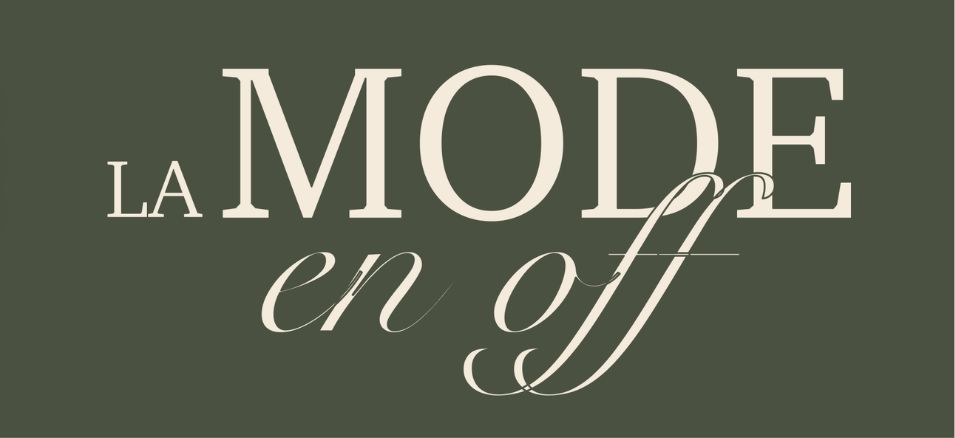
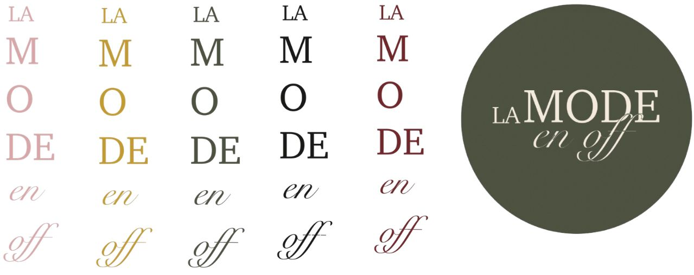

La Mode en Off est un blog consacré au décryptage de l’histoire de la mode, des tendances et des influences artistiques qui façonnent l’univers vestimentaire.
À travers des contenus variés, l’objectif est de développer la culture mode, de mettre en lumière les origines des tendances et de porter un regard analytique sur les créations, les maisons de couture et leurs directeurs artistiques.
Les thématiques abordées
- Au premier rang du défilé… : décryptage des défilés et collections.
- Histoire d’une pièce : origine et évolution des vêtements emblématiques.
- Au fil des directeurs artistiques : parcours et influences sur les maisons de couture.
- La mode à travers le monde : traditions et influences culturelles.
- L’étoffe d’une histoire : histoire, caractéristiques et usages des textiles.

Projet en cours de développement